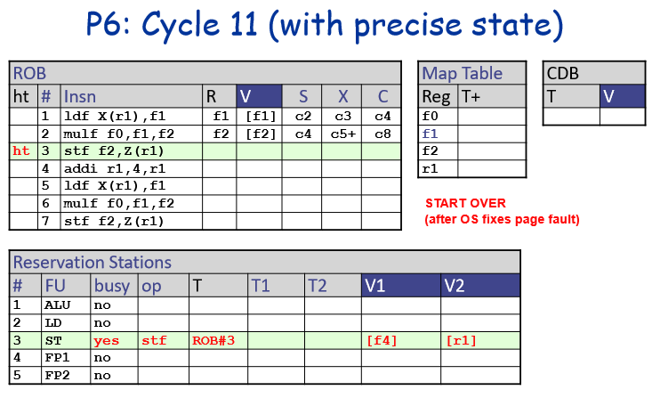

5 Out-of-Order - Speculation, Precise Interrupts, Superscalar
5.1 Superscalar
Superscalar refers to issuing multiple instructions at the same time
- Dynamic scheduling and multiple issue are orthogonal techniques
- Gives us 2 dimensions of scaling:
- N: Superscalar width (number of parallel operations)
- W: Window Size (number of reservation stations)
- i.e. how many instructions we can read into the processor and choose to re-order among those
- Determines # of independent ins. that can be operated on in parallel
- Directly limits ILP (since it controls how many instructions can wait for execution)
- Gives us 2 dimensions of scaling:
Scaling for an N-by-W Tomasulo:
- RS:
- N tag/value write ports (Dispatch)
- N value read ports (Issue)
- 2N tag CAMs (Writeback)
- Each RS entry needs to search for operand tag, and we have 2 source regs (thus 2 tag CAMs per RS entry)
- Select Logic (Issue):
- W to N priority encoder
- to select N instructions to issue out of window W
- W to N priority encoder
- Map Table
- 2N read ports (Dispatch)
- Read 2N (2 reg per instruction)
- N write ports (Dispatch)
- N instructions could be written to, need N ports to update mapping
- 2N read ports (Dispatch)
- Register File
- 2N read ports (Dispatch)
- N write ports (Writeback)
- Similar read/write ports as Map Table (2 read for 2 source regs per ins, N write for 1 destReg per ins)
- CDB:
- N (Writeback)
What is hard to scale up?
- Select logic tends to be difficult to scale up
- RS is pretty expensive
- CDB also takes up a lot of space and power! Routing overhead of CDB is very significant! Difficult to design
Note
Kind of settled in industry that around 5-way superscalar is where we get a lot of benefits before diminishing returns (before starting to use too much power and add complexity / slows pipelines)
5.1.1 Superscalar Select Logic
- Superscalar select logic: W->N priority encoder
- Complicated (complexity of \(N^2log(W)\))
- Can be simplified with different designs
- Technique: Split design - Distributed Reservation Station
- Divide RS into N banks: (1 per FU)
- Thus need to implement N separate W/N to 1 encoders
- Much simpler complexity: \(Nlog(W/N)\)
- Con: Much less scheduling flexibility
- Other FU might be free, but a RS bank is tied to one FU
- Possible load imbalance between banks
- FIFO Design [Palacharla+]
- Only issue the head of each RS bank
- Simpler: No need for select logic at all
- Con: Less scheduling flexibility (however, surprisingly not that bad)
- Cannot issue OoO within a bank!
- Load balancing issues
5.2 Bypassing
- Bypassing in OoO is tricky!
5.3 Interrupts & Exceptions
From Tomasulo, we know branches don’t work well with wrong predictions since we need to clean up OoO execution of the instructions already inside the pipeline. Another problem is when dealing with interrupts & exceptions.
Interrupts and exceptiosn are unexpected transfer of control flow that is restartable (pick up where we left off from before).
- Asynchronous (Interrupts)
- E.g. I/O device wants attention
- Allows that we defer the interrupt until it is convenient
- Therefore asynchronous interrupts are easier to deal with than synchronous exceptions
- Synchronous (aka Exceptions, Traps)
- Unusual condition for some instruction
- E.g. divide by zero, page faults, etc. Need to switch to OS to deal with it or some specialized routine
- Explicit calls to operating system software
- Main difference from interrupts is that exceptions are always triggered by some specific instruction
- Harder to deal with as we can’t just finish current instructions that are running
- Unusual condition for some instruction
Precise Interrupt is an abstraction of our program that at any given point in time we should be able to draw a line in our program that separates instructions that are finished and instructions that have not yet finished. Need to somehow “hide” the result of the instructions until we know for sure we have to execute them.
OoO execution messes both branch speculation and precise interrupts. Although precise state is implemented not for performance reasons (rather for programmability), we will get performance improvement since we won’t have to stall as much on branches.
- Speculative execution needs
- Ability to abort & restart at every branch
- Abort & restart at every load useful for load speculation (speculation in LSQ)
- And for shared memory multiprocessing
- Interrupts and exceptions require abort & restart at every instruction!
- The ability to abort & restart at every instruction is precise state
- Ignoring it (imprecise state) makes page faults (or any restartable exception) difficult, and makes speculative execution almost impossible
5.3.1 Precise State
- Options:
- Force in-order completion (at writeback) and stall if necessary - SLOW!
- Implement precise state in software - trap to recovery routine - will need to trap on every branch miss - BAD!
- Precise state in HW - way to go!
- Recall that we split decode into an in-order dispatch and out-of-order issue.
- A similar idea can be done with the register file:
- out of order write to a buffer, in order write to the actual register file
- We turn the instruction buffer into the Re-Order Buffer (ROB)
- Re-order the instructions after executing them out of order, only updating the register file once things are at the head of the ROB (in-order)
- Thus: OoO write to ROB, in-order write to RF
- ROB may be combined with RS or used as a separate structure
- Combined: register-update unit RUU (Sohi’s method)
- PRos: Saves space, faster operand wakeup and forwarding. Simplifies execution flow
- Cons: Scalability issue - entire structure needs to support both scheduling and reordering, complex issue logic
- Separate (more common today): P6 style
- Combined: register-update unit RUU (Sohi’s method)
- Split Writeback into two stages: Complete and Retire
- The ROB defines the number of instructions that can be in-flight in execution, essentially defining the size of the instruction window, meaning a larger ROB = more future instructions can be considered for execution
5.3.2 Asides - ROB and RS Sizing
ROB stores all in-flight instructions from dispatch until they commit in-order
- Ensures precise state, and in-order retirement
- Determines the instruction window - how many total instructions can be in-flight
RS holds instructions waiting for execution
- Affects instruction issue rate - how many instructions can be issued in parallel
“When sizing a reorder buffer (ROB) compared to a reservation station, the ROB generally needs to be larger because it holds the results of instructions until they are ready to commit, while a reservation station only needs to store operands temporarily until the instruction can execute, allowing for more instructions to be in flight during out-of-order execution; meaning a larger ROB is typically required to maintain program correctness while maximizing performance.”
5.3.3 Complete & Retire
- Complete - where instructions finish execution (but results don’t go to RF yet)
- Write the results into the ROB, which holds the pending results and forward to pending instructions in the RS
- Retire - where we take the ROB head and wrie the result back into the RF
- Head is the entry that has been in the ROB the longest (oldest instruction in program order)
- “committing” this instruction to the RF
- Finishes in program order
5.4 P6 Style
Basically Tomasulo’s algorithm + ROB, where ROB and RS are separate
5.4.1 Data Structures
- ROB
- head, tail: pointers to maintain sequential order
- Head is oldest insn, tail is youngest
- R: instruction destination register
- V: instruction output value
- Each instruction gets a ROB entry
- Helps solve following problems:
- Main motivation: preventing writing back an instruction that wasn’t supposed to (in-order retire)
- Resolve name dependencies
- head, tail: pointers to maintain sequential order
- Reservation Station - same as in Tomasulo
- Map Table:
- Keeps track of which ROB entries holds latest values for each architectural register (maps arch reg -> ROB#)
- Different from Tomasulo:
- Stores T+: tag + “ready-in-ROB” bit
- If T is empty, value is ready in the RF
- If T is not empty (but no + bit), value is not ready
- If T is not empty with + bit, value is ready in the ROB
- Tags are different:
- Tomasulo uses RS# as Tag
- P6 uses ROB# as Tag (since ROB# corresponds to an instruction)
What about loads and stores?
- We can’t resolve data dependencies between loads and stores until we actually execute the instruction (need to compute address first)
- Need extra hardware structure: Load Store Queue (LSQ) - see notes later on this
- Completed stores write to LSQ
- When stores retire, the head of the LSQ (oldest ins) gets written to D-cache
- When loads execute, access LSQ and D$ in parallel
- Forward data from LSQ if older store has a matching address
- More modern designs: have loads and stores in separate queues
5.4.2 Pipeline
Pipeline: Fetch, Decode, Issue, Execute, Complete, Retire
- Dispatch
- If structural hazard on ROB/LSQ/RS then Stall
- Since dispatching an instruction requires us to send insn to these structures
- Note: if non-memory dispatching insn and LSQ is full, it is fine
- Allocate entry in ROB/LSQ/RS
- Set RS tag to the ROB#
- Set the Map Table entry to the ROB# and clear “ready-in-ROB” bit
- Read ready registers into RS (from either ROB or RF)
- If structural hazard on ROB/LSQ/RS then Stall
- Execute
- Free RS entry
- Note: recall how in Tomasulo we freed RS entry at writeback. This is moved earlier here because RS# are no longer tags
- Free RS entry
- Complete
- If there’s structural hazard on the CDB, then wait
- Write value into ROB entry indicated by the RS tag
- Mark the ROB entry as Complete
- If the ROB entry overwritten, mark Map Table entry “ready-in-ROB” bit (+)
- i.e. if in the Map Table, the arch reg -> ROB# (of the completed insn) is still there and not overwritten by a new instruction, then we set the “ready-in-ROB” bit since we now have the value. Otherwise the arch. reg. is overwritten by a newer instruction and needs a different value.
- Retire
- If instruction at ROB head not complete? Stall
- Handle any exceptions
- Write ROB head value to register file
- If store instruction at head, write the LSQ head to the D-cache
- Free ROB/LSQ entries that are retired
5.4.3 P6 Dispatch

5.4.4 P6 Complete
5.4.5 P6 Retire
5.4.6 Precise State in P6
Point of the ROB is to maintain Precise State
- To do so:
- Wait until last good instruction retires such that the first bad instruction is at the ROB head
- Good as in insn should be finished as usual, bad as in insn that shouldn’t be run (such as insns after a mis-predicted branch)
- Then clear the contents of the ROB, RS, and Map Table
- Start over (start running the pipeline again from the correct instructions)
- Wait until last good instruction retires such that the first bad instruction is at the ROB head
- This works because ROB helps us maintain program order, and we clear everything that should be flushed
5.4.7 P6
What is the cost of adding precise state?
- In general, P6 has same performance as “plain” Tomasulo
- ROB is not designed to make system more performant (although it may give a little speedup since RS freed earlier leads to fewer structural hazards)
- Rule of Thumb for ROB Size:
- At least N \(\times\) number of pipe stages bewteen D and R
- Need to make sure ROB covers pipeline
- At least \(N \times t_{hit-L2}\)
- Miss in L1 cache is most comon reason for a stall, thus if we can make sure the number of instructions “in flight” is N times hit time of L2 cache, this makes sure even if we have a miss on L1 we can keep fetching instructions to keep the CPU busy
- At least N \(\times\) number of pipe stages bewteen D and R
- The problem with P6 for high performance implementations:
- Too much value movement (regfile/ROB -> RS -> ROB -> RF)
- Multi-input MUXes, long buses complicate routing and slows clock
- We’re moving values around a lot, could have many different copies of the same value
- This motivates us towards a R10K design where we have 1 value and keep track of where things are
5.5 MIPS R10K
An alternative implementation is a MIPS R10K-style architecture
- Big idea: Have all data in one place
- Use one big physical register file to hold all data - no copies
- Register files are close to FUs, leading to small & fast data path
- ROB and RS “on the side” used for only control and tags
5.5.1 R10K Register Renaming
No more architectural register file. Instead the physical register file holds all values.
- Num. of Physical Registers = Num. of Arch. Regs + Num. ROB Entries
- Map architectural registers to physical registers
- This removes name hazards (WAW, WAR). Compared to P6, phys. reg. replace RS copies
- Big change to map table: each entry in the table always contains some mapping to physical registers (since there is no arch. register file anymore)
- Free List keeps track of unallocated physical registers that we can assign to
- ROB is responsible for returning physical registers to the free list
- Can be implemented with a bit array, one bit for each physical register, tracking if the register is free or not
- Conceptually, this is “true register renaming”
How do we free registers?
- In P6, values were temporarily stored with the ROB entry. On retire, ROB value is copied to the RF, freeing the ROB entry
- However in R10k, we can’t free physical registers when instruction retires
- There is no architectural register to copy the value to… other instructions might need this value
- Notice: We can free physical register that is previously mapped to same logical register
- Why? All insns that will ever read its value have retired
- In otherwords:
- Once we retire an instruction, we know for sure that previous physical registers that used this destReg won’t be used anymore. Any instructions being executed now must be using the newer version of the register
5.5.2 R10K Data Structures
- ROB
- T: Physical register # corresponding to the instruction’s logical output
- T_old: physical register # previously mapped to instruction’s logical output
- This is so that we know what physical register to free
- RS
- T, T1, T2: output and two input physical register numbers
- Map Table
- Stores the mapping from arch. reg to physical registers
- T+: Physica Reg # + “ready bit”
- Note that map table entires are never empty
- Architectural Map Table
- T: Physical Reg #
- Can be used to restore state after a branch mispredict or exception
- Keeps a separate version of the map table that doesn’t hold speculative updates
- Speculative as in instructions that are in-flight
- Only gets updated on retire (in-order)
- When clearing out processor pipeline, this tells us where the “official” register values are kept at any given time
- Free List
- T: Physical Reg #
- Tracks what physical registers are free
Key differences from P6:
- New tags: R10K tags are Physical Register # (compared to ROB# in P6)
- No register values are stored in ROB, RS, or on CDB
- This is key for hardware since this minimizes overheads spent on value copies, especially the CDB (which adds significant routing costs, etc)!
5.5.3 R10K Pipeline
- Fetch
- Dispatch
- On structural hazard (RS, ROB, LSQ, or Physical Registers), then stall
- Allocate RS, ROB, LSQ entries and a new physical register (T)
- Record the previously mapped physical register (T_old)
- Complete
- Write value to destination physical register
- Retire
- If ROB head not complete, stall
- Handle any exceptions
- Store write LSQ head to D cache
- Free the ROB and LSQ entries that is retiring
- Free previous physical register (T_old)
- Record committed physical register (T) (to architectural map table)
5.5.4 Dispatch
- Allocate entry at tail of ROB
- Allocate RS entry and populate values
- Allocate physical reg on free list to Map table
5.5.5 Complete
5.5.6 Retire
5.5.7 Precise State in R10k
Disadvantage of R10K is that precise state has more overhead
- On exception/mispredict, copy arch. map table into map table
- Also need to keep an architectural free list
- To track free physical registers after retirement
- Also need to keep an architectural free list
- Alternative: Serially rollback execution using T, T_old ROB fields
- Very slow but costs less hardware (since no need for architectural map table)
5.6 Summary
- Modern dynamic scheduling must support precise state (programmability)
- Strategy: Split writeback into Complete (OoO) + Retire (in order)
- Two basic designs:
- P6: Tomasulo + ROB, copy-based register renaming
- Precise state is simple, but fast implementation difficult (due to value copies)
- R10K: Implements “true” register renaming
- Easier fast implementation, but precise state is more complex
- P6: Tomasulo + ROB, copy-based register renaming
5.7 Examples
5.7.1 P6 Execution


5.7.1.1 P6 With Precise State
